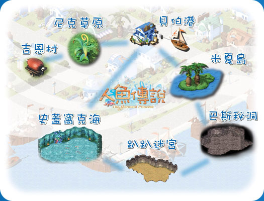

|
 在吉恩村的東方的草原，原本是個很荒蕪的地方，因為路加斯王國建造了貝伯港後，才開始有商人或是旅行者經過。 《貝伯港》 這是目前整塊大陸上唯一對外的海港。整個海港非常具有海洋氣息，建築以藍白色彩為主。由於是個新興的海港，商店還不是很多，目前只有銀行、雜貨店、酒館跟倉庫等較具機能性的建築。 《米夏島》 位於貝伯港東南方不遠處的海域上，目前到這島的唯一方法，就是從貝伯港搭乘船隻前往。島上尚未沒有人居住，照理說應該是個荒蕪的小島，不過因為聽說島上藏有寶物，所以吸引了不少想一圓淘金夢的冒險者前來探險。 《趴趴迷宮》 在米夏島底下的神秘迷宮，不知道是何時何人所建造的，迷宮非常複雜，在加上裡面早已被許多邪惡幻獸所佔領，所以冒險者在進入後，一不小心可能就會再也出不去了。 《巴斯秘洞》 通過趴趴迷宮以後，就是巴斯秘洞了，整個秘洞非常的潮濕，老實說在裡面行走並不是很舒服。 《史蓋窩克海》 從巴斯秘洞可以通往史蓋窩克海，一般人是無法在海底存活的，除非要服用一種神秘的藥丸，不過這種藥丸的來源非常神秘，知道的人並不是很多。傳說，在史蓋窩克海裡住著美麗的人魚們，到底是不是真的呢？也只能希望早日有冒險者可以到此一探究竟了。
|